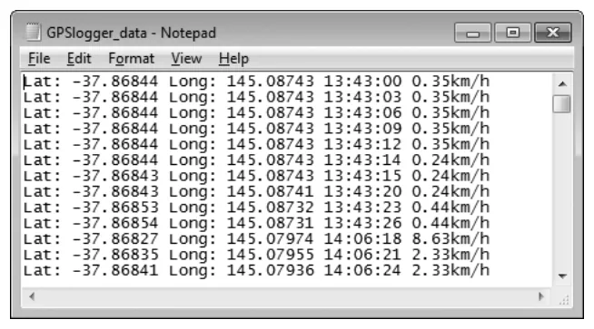
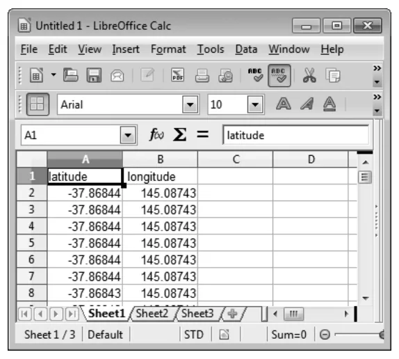
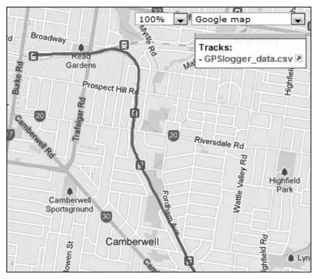

over Time
Now that you know how to receive GPS coordinates and convert them into normal variables, we can use this information with the microSD card shield from Chapter 8 to build a GPS logger. Our logger will record our position over time by logging the GPS data over time. The addition of the microSD card shield will allow you to record the movement of a car, truck, boat, or any other moving object that allows GPS signal reception; later, you can review the information on a computer.
The Hardware
The required hardware is the same as that used for the previous examples, except that you need to replace the LCD shield with the microSD shield from Chapter 8, and you’ll use external power. In our example, we’ll record the time, position information, and estimated speed of travel.
The Sketch
After assembling your hardware, enter and upload the following sketch:
// Project 46 - Recording the Position of a Moving Object over Time
#include <SD.h>
#include <TinyGPS.h>
// Create an instance of the TinyGPS object
TinyGPS gps;
void getgps(TinyGPS &gps);
void setup()
{
pinMode(10, OUTPUT);
Serial.begin(9600);
// check that the microSD card exists and can be used
if (!SD.begin(8)) {
Serial.println("Card failed, or not present");
// stop the sketch
return;
}
Serial.println("microSD card is ready");
}
void getgps(TinyGPS &gps)
{
float latitude, longitude;
int year;
byte month, day, hour, minute, second, hundredths;
//decode and display position data
gps.f_get_position(&latitude, &longitude);
File dataFile = SD.open("DATA.TXT", FILE_WRITE);
// if the file is ready, write to it
❶ if (dataFile)
{
❷ dataFile.print("Lat: ");
dataFile.print(latitude,5);
dataFile.print(" ");
dataFile.print("Long: ");
dataFile.print(longitude,5);
dataFile.print(" ");
// decode and display time data
gps.crack_datetime(&year,&month,&day,&hour,&minute,&second,&hundredths);
// correct for your time zone as in Project 45
hour=hour+11;
if (hour>23)
{
hour=hour-24;
}
if (hour<10)
{
dataFile.print("0");
}
dataFile.print(hour, DEC);
dataFile.print(":");
if (minute<10)
{
dataFile.print("0");
}
dataFile.print(minute, DEC);
dataFile.print(":");
if (second<10)
{
dataFile.print("0");
}
dataFile.print(second, DEC);
dataFile.print(" ");
dataFile.print(gps.f_speed_kmph());
❸ dataFile.println("km/h");
dataFile.close();
❹ delay(30000); // record a measurement every 30 seconds
}
}
void loop()
{
byte a;
if ( Serial.available() > 0 ) // if there is data coming into the serial line
{
a = Serial.read(); // get the byte of data
if(gps.encode(a)) // if there is valid GPS data...
{
❺ getgps(gps); // then grab the data and display it on the LCD
}
}
}This sketch uses the same code used in Projects 44 and 45 in void loop() to receive data from the GPS receiver and pass it on to other functions. At ❺, the text from the GPS receiver is passed into the TinyGPS library to decode the data into useful variables. At ❶, the microSD card is checked to determine whether data can be written to it, and from ❷ to ❸, the relevant GPS data is written to the text file on the microSD card. Because the file is closed after every write, you can remove the power source from the Arduino without warning the sketch, and you should do so before inserting or removing the microSD card. Finally, you can set the interval between recording data at ❹ by changing the value in the delay() function.
Displaying Locations on a Map
After operating your GPS logger, the resulting text file should look similar to Figure 13-10.

Once you have this data, you can enter it into Google Maps manually and review the path taken by the GPS logger, point by point. But a more interesting method is to display the entire route taken on one map. To do this, open the text file as a spreadsheet, separate the position data, and add a header row, as shown in Figure 13-11. Then save it as a .csv file.

Now visit the GPS Visualizer website (http://www.gpsvisualizer.com/). In the Get Started Now box, click Choose File and select your data file. Choose Google Maps as the output format, and then click Go!. The movement of your GPS logger should be shown on a map similar to the one in Figure 13-12, which you can then adjust and explore.
